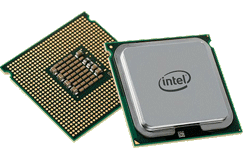

Hardware
Motherboard
The motherboard is the "central nervous system" of the computer. It connects all the computer's parts. The components of a motherboard are the microprocessor, the coprocessors, the memory, basic input/output system (BIOS), expansion slots, and interconnecting circuitry. A motherboard also has sockets for components like CPU, RAM, and expansion cards. It is connected to hard drives, disc drives, and front panel ports using cables and wires.
The first motherboard was made in 1981 by IBM, for their "IBM personal computer"
Leading manufacturers today include Intel, Asus, Gigabyte, MSI and ECS.

CPU
The CPU is the brain of the computer. It takes instructions from the RAM, executes them, then sends back computed results to relevant components. The speed of a CPU is measured in Hz. 1 Hz means 1 instruction per second. For example, my 1.9 GHz (GigaHertz) CPU is able to process 1,900,000,000 instructions per second. CPU's can have multiple core, which they use to process applications with multiple threads. In other words, they do more instructions at the same time. This can be useful for games, which can use 2-4 cores, and also video editing, image editing, and virtualization, which can use 8 or more cores at once.
Leading manufacturers are Intel and AMD for PCs, and Qualcomm, Nvidia, Apple and Samsung for smart phones and tablets.
The first CPU was made by Intel in 1971. It was called the "Intel 4004".

RAM
The RAM is the "short term memory" of the computer. It is an acronym for "random access memory". RAM is much faster than other means of storing information, like hard drives. RAM is volatile, which means that when you turn off your computer, any data stored on RAM will be lost.
Some leading manufacturers today are Corsair, Kingston, Micron, Samsung, and OCZ.
The first RAM was the Williams-Kilburn Tube. It was invented in 1946 by Freddie Williams and Tom Kilburn and could store 1024-2560 bits of data.

Hard Drive
The hard drive is the "long term memory" of the computer. It stores most of the information in your computer. This includes your operating system, your programs, your games and your media. Hard drives come in two kinds: hard disk drives and solid state drives. Solid state drives are faster than hard disk drives, but are also more expensive. Hard drives can be internal (inside your computer), or external (outside your computer). Internal drives are faster, have more storage, and are usually cheaper, although external drives are much easier to install.
Some leading manufacturers today are Western Digital, Seagate and Toshiba.
The first hard drive was the IBM 350 Disk File. It was invented by Reynold Johnson. It was first used in 1956 with the IBM 350 RAMAC computer.

BUS
A BUS is a system that moves data from one source to another. BUSes reduce the amount of pathways are needed to get data from one component to another, instead the data uses a single data channel in a kind of "data highway". They are measured in two metrics: bits that can be transferred in parallel (width), and the clock rate or frequency (in Hz) of the bus. A cycle (1 Hz) is each time data is sent or recieved.

Keyboard Mouse and Monitor
Keyboards, mice, and monitors are all hardware components. A mouse is a pointing device used to move a cursor around the screen, and also to click and drag things in the screen. A keyboard is used to input text by typing on it's keys. A monitor is a screen of thousands of pixels that lights up to form images. You need a monitor to see what you are doing on a computer.
There are many manufacturers of hardware like mice and keyboards. Some examples are Logitech, HP and Lenovo.